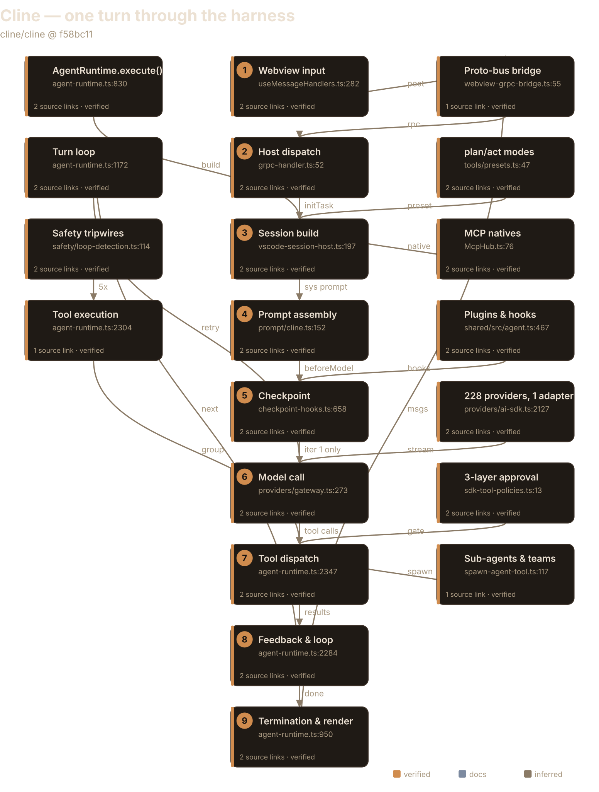
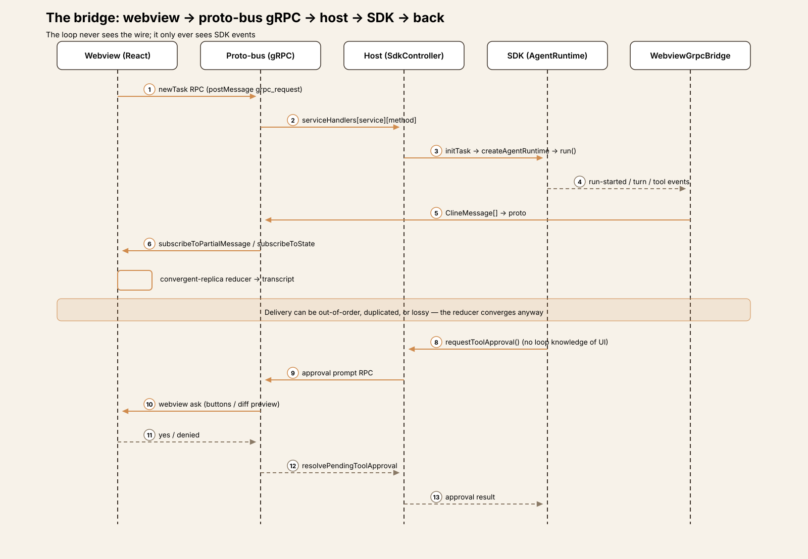
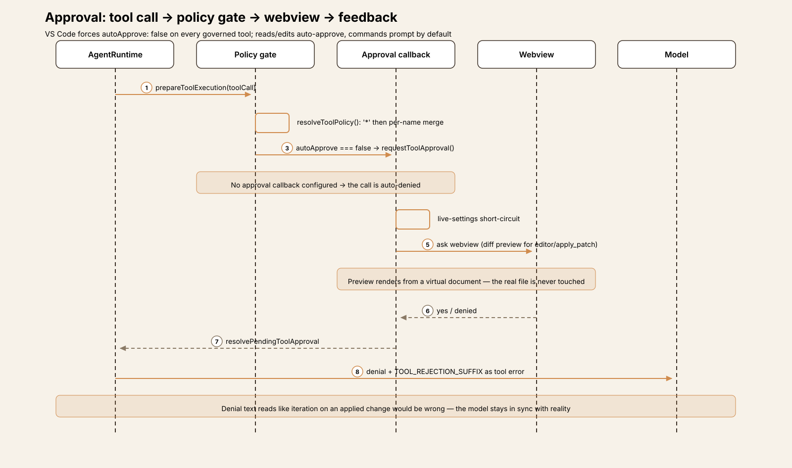
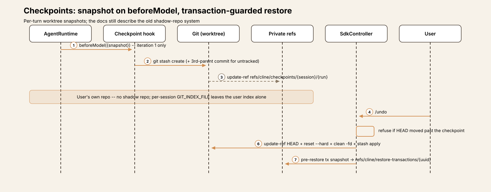
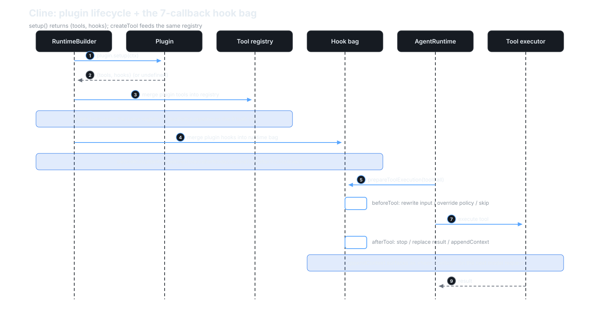
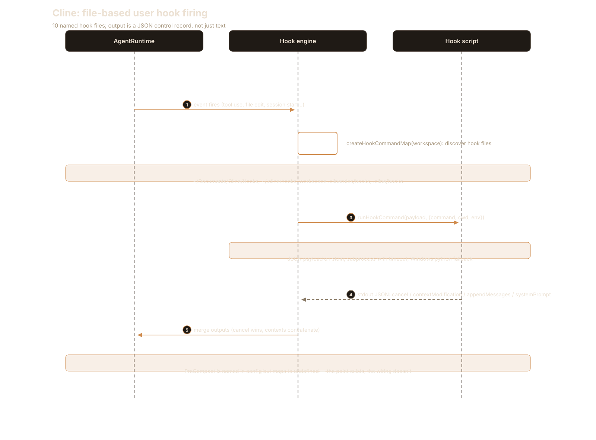
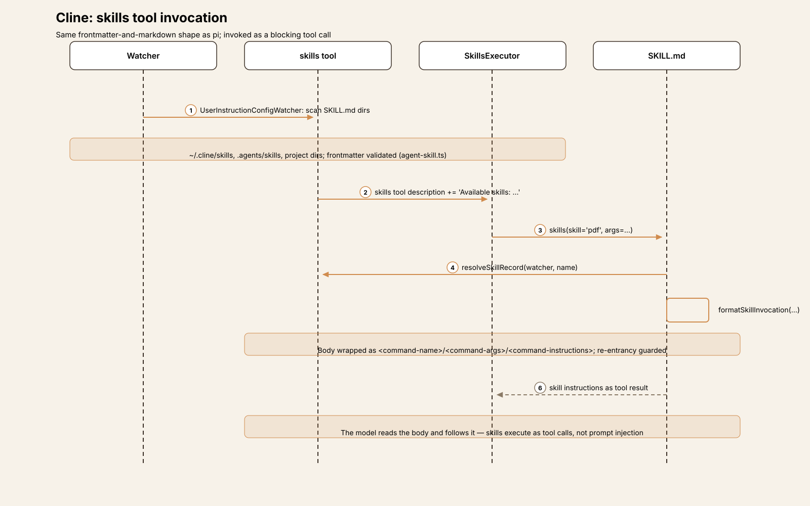
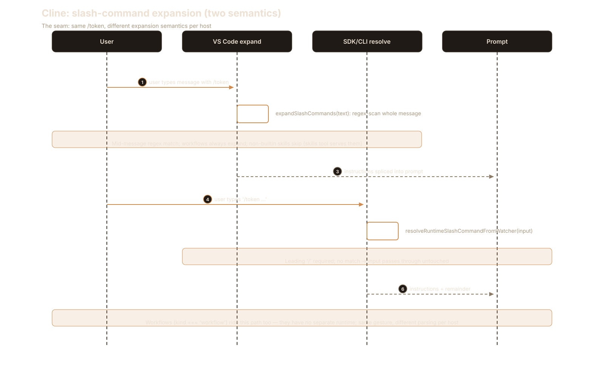
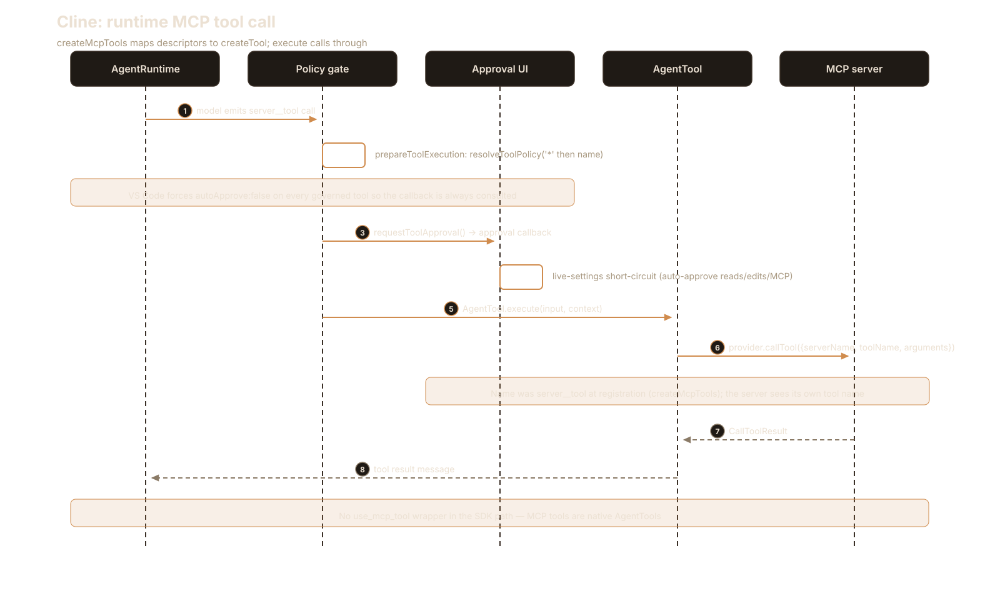
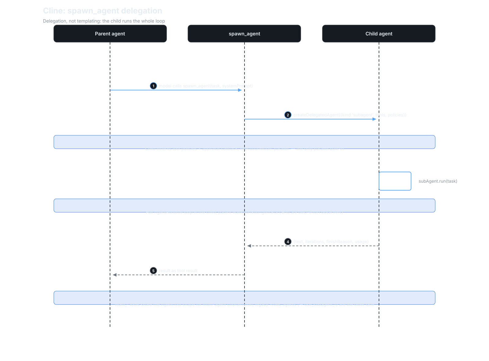

Agent Harness Anatomy #3: Cline — the approval-gated IDE resident
Series: Agent Harness Anatomy — top-down dissections of real agent harnesses, grounded in verifiable source code. Every behavioral claim below carries a footnote to a pinned GitHub permalink; the full evidence lives in the endnotes.
Version block
- Repo: cline/cline
- Pinned: tag
v4.1.22→f58bc118bdeef1bd2813cd08e00d98bdcda96475(2026-09-29) - Language: TypeScript (bun workspace)
- License: Apache-2.0
- Claim under test: "Autonomous coding agent right in your IDE"
- Scope: this teardown covers the VS Code extension (
apps/vscode/); the SDK underneath is mapped as the loop's home,apps/cliis noted where it inverts the extension's defaults, and the desktop app is out of scope.1
| Package | Non-test .ts |
Role |
|---|---|---|
apps/vscode/src |
570 files, 76,962 LOC | Extension host, webview, gRPC bridge |
sdk/packages/core/src |
342 files, 110,215 LOC | Runtime, tools, session, safety, checkpoints |
sdk/packages/agents/src |
2 files, 2,919 LOC | THE loop |
sdk/packages/shared/src |
99 files, 18,252 LOC | Contracts, hooks, prompt templates |
sdk/packages/llms/src |
~17.5k non-generated LOC | Provider gateway + one AI-SDK adapter |
(The llms package also carries 199,952 lines of generated model catalog
— catalog.generated.ts alone is 196,595 lines marked "DO NOT EDIT".
Generated artifacts are excluded from the code total
above — a counting convention applied across the series; the catalog's scale is itself a finding, covered under providers.)1

The mental model
Cline is an approval-gated, checkpointed pair programmer that lives
inside the IDE: the agent loop is a host-independent SDK
(@cline/agents), the VS Code extension is a thin host that configures
policy and executors, and the webview is a gRPC client rendering a
convergent transcript.2 Three inversions against the series so far: pi
pushes policy out to extensions; aider replaces policy with git; Cline
makes policy the product — a three-layer approval model with diff previews
in the IDE.3 And where pi's loop is a library you embed and aider's loop
is a CLI you run, Cline's loop is an npm SDK with a plugin interface — the
IDE is one host among several, and the CLI host inverts the extension's
approval posture entirely.4
The governing tradeoff: Cline asks the most and sandboxes the least. Every command prompts by default, every turn snapshots your worktree, and the safety net is reversibility (checkpoints, diff previews, denial feedback) rather than containment. If you're building a harness, that's Cline's thesis in one sentence: the user is the sandbox, so make asking cheap and undoing certain.
Package map
A layered monorepo, with the dependency direction running strictly downward:5
@cline/shared contracts: AgentTool, hooks, prompt templates, ToolPolicy
↑
@cline/llms gateway registry + one Vercel-AI-SDK adapter; 228 provider specs
↑
@cline/agents THE loop (agent-runtime.ts, 2,862 lines)
↑
@cline/core ClineCore, session orchestration, tools, safety, checkpoints, extensions
↑
apps/vscode extension host: SdkController, VscodeSessionHost, gRPC, webview
apps/cli @cline/cli — separate host app, opposite approval default
Entry is apps/vscode/src/extension.ts:67 activate() → a
VscodeWebviewProvider → SdkController (2,499 lines), which builds
sessions through VscodeSessionHost (wrapping ClineCore with VS Code
tool executors, the MCP hub, and a terminal manager) down to
createAgentRuntime in @cline/agents.2 The React webview
(apps/vscode/webview-ui/) never touches the loop — it talks to the host
over a generated proto-bus gRPC bridge (apps/vscode/proto/, 22 services,
224 RPCs), and a WebviewGrpcBridge translates SDK session events back
into ClineMessages for the UI's subscription streams.26
The core loop
The loop is AgentRuntime.execute() in
sdk/packages/agents/src/agent-runtime.ts (2,862 lines). Entry points
run(input) / continue(input) both funnel into execute(), and the
loop construct itself is disarmingly plain:7
while (
this.config.maxIterations === undefined ||
this.state.iteration < this.config.maxIterations
) {
Three nested levels, the same shape as aider's:
- Outer run —
execute():ensureInitialized(), a freshAbortController,beforeRunhooks, arun-startedevent, input normalization, a completion-tool reminder injected so the model sees it on the first request, then the turn loop.8 - Turn loop — per iteration: a
turn-startedevent →generateAssistantMessageWithProviderRetry()(provider retry:PROVIDER_ERROR_MAX_RETRIES = 3, 1s→15s backoff, transient errors only) → the assistant message is recorded → tool-call parts are extracted. With no tool calls, completion reminders are consulted and the run either re-loops orfinishRun("completed")fires therun-finishedevent. With tool calls,executeToolCalls()runs them, results are pushed as messages, andfindCompletingToolMessage()checks whether any tool withlifecycle.completesRun === truesucceeded — exactly one in-tree tool has it,submit_and_exit: the run's stop button is a tool.910 - Tool execution —
prepareToolExecution(): resolve the tool →beforeToolhooks (which can rewrite input, override policy, or skip) →resolveToolPolicy()(merges the"*"policy, then the per-name one) →enabled === falseskips →autoApprove === falsetriggersrequestToolApproval()— and if no approval callback is configured, the call is auto-denied. A denial becomes a skip reason plusTOOL_REJECTION_SUFFIX, fed back to the model as a tool error.11 Execution is grouped byexecutionMode: sequential calls run one by one; adjacent parallel calls are batched into onePromise.all. All 9 default tools are sequential; onlyspawn_agentand configured-agent tools opt into"parallel".12
The most interesting negative finding: there is no iteration cap in the
VS Code host — cline-session-factory.ts sets maxIterations:
undefined.13 The numeric bound is not turns but repetition: loop
detection aborts on 5 consecutive identical tool calls (soft nudge at 3),
and the mistake tracker stops the run after 6 consecutive failed turns
(a productive turn resets the count; at the limit the host decides whether
to continue).14 Like pi, Cline trusts the model's stop behavior — but
unlike pi it keeps two tripwires on the wall, both reactive rather than
preventive.
Recovery paths inside the loop: an output-token cut-off with no tool calls
gets MAX_TOKENS_RECOVERY_LIMIT = 3 retries with a conciseness nudge (the
counter resets on any tool-call turn, so progress buys more budget);
context-window overflow routes to the compaction pipeline or a terminal
message; an empty response throws; a content filter ends with a message
advising the user to rephrase.15 Mid-run user messages don't start a new
run — PendingPromptService queues them and notifyPendingUserMessage()
aborts the in-flight model request so the new message folds into the next
turn.16
One turn, end to end
Trace: the user types add a retry helper to src/utils.ts and run the
tests in the VS Code sidebar, act mode, default auto-approvals.
① Input (webview). handleSendMessage in the React UI calls
TaskServiceClient.newTask() — a generated ProtoBusClient subclass.
The webview postMessages {type: "grpc_request", ...} to the host;
server-streaming RPCs register callbacks plus an unsubscribe handle. The
model-facing loop never sees this wire; it only ever sees SDK events.17
② Host dispatch. handleGrpcRequest routes to the generated
serviceHandlers[service][method] table, landing in
SdkController.handleTaskCreation → initTask, which coordinates the
task-start sequence.18
③ Session build. cline-session-factory.ts builds the session config —
mode act selects ToolPresets.act, maxIterations: undefined, and the
per-mode model fields (planMode*/actMode* settings keys) — then
VscodeSessionHost.start → ClineCore.start → a SessionRuntime →
createAgentRuntime with the 9 default tools, the MCP server__tool
natives, and one quiet substitution: VS Code suppresses the SDK's shell
tool via toolExecutors.bash = undefined and registers its own
terminal-backed run_commands under the identical name — same policy key,
different execution semantics, invisible to the policy layer.1920
④ Prompt assembly. buildClineSystemPrompt renders the ACT base
template, replacing {{PLATFORM_NAME}}, {{CURRENT_DATE}},
{{IDE_NAME}}, {{CWD}}, {{CLINE_RULES}} (user rules formatted as
# Rules / ## <name> / instructions), and {{CLINE_METADATA}}. Then
MessageBuilder normalizes the message list for the API: truncation
budgets, missing-tool-result repair, sticky outdated-rewrite decisions.21
⑤ Checkpoint. The beforeModel hook fires — iteration 1 only — and
snapshots the worktree: git stash create, plus a synthesized third-parent
commit for untracked files, pinned under the private ref
refs/cline/checkpoints/{session}/{runCount} in the user's own
repository. (More on why the docs describe something else entirely
below.)22
⑥ Model call. DefaultGateway.stream() → registry.resolveModel()
does an exact-ID match against the provider catalog (unknown IDs fall
back to an unregistered-model path, not an error) → capability gates →
the family factory builds a Vercel AI SDK provider → streamText. Tokens
stream back as runtime events.23
⑦ Tool dispatch. The model emits read_files and editor calls.
prepareToolExecution resolves the policy: VS Code forces
autoApprove: false on every governed tool so the SDK always consults the
live UI, and the approval callback applies the live settings — reads,
edits, browser, and MCP are auto-approved by default; commands always
prompt. read_files and editor run; each result is appended.24
⑧ Feedback & loop. Tool results feed the next iteration. When the model
calls run_commands for the tests, the approval callback prompts in the
webview — edits get a diff preview rendered from a virtual document ("the
real file is never opened or modified by the preview"); command asks get
buttons. A denial comes back with "The user denied this edit. The file was
NOT modified…" plus TOOL_REJECTION_SUFFIX, fed to the model as a tool
error — the denial text is written to read like iteration on an applied
change would be wrong, keeping the model in sync with reality.25
⑨ Termination & render. No more tool calls, no completion reminders →
finishRun("completed") → run-finished → WebviewGrpcBridge translates
SDK events into ClineMessages → proto → the webview's
subscribeToPartialMessage / subscribeToState streams → the
convergent-replica reducer renders the transcript. If the user wants the
pre-turn worktree back, /undo calls SdkController.restoreCheckpoint:
refuse if HEAD moved past the checkpoint, else update-ref HEAD +
reset --hard + conditional clean -fd + stash apply, guarded by a
pre-restore transaction snapshot under
refs/cline/restore-transactions/{uuid}.2627
The bridge: host ↔ webview
The extension host and the React webview are two processes that never share
memory, and the wire between them is a first-class architectural component
— not a rendering detail. It is the mechanism by which loop events become
IDE UI and user gestures become loop inputs, with no analogue in pi or
aider. Everything between host and webview crosses apps/vscode/proto/: 22
services, 224 RPCs — 16 cline/* services (tasks, checkpoints, MCP,
browser, terminal…) and 6 host/* services (the host calling back into the
webview).26 The clients are generated ProtoBusClient subclasses; the
server side is a generated serviceHandlers dispatch table. A "send
message" is a newTask RPC; a "stream the transcript" is two
server-streaming subscriptions (subscribeToPartialMessage,
subscribeToState) with callback-plus-unsubscribe handles on the webview
side.1718
The transcript is a convergent replica. The SDK emits events; the
WebviewGrpcBridge translates each into a ClineMessage; the messages
cross the proto wire; the webview reduces them into React state. Delivery
can be out-of-order, duplicated, or lossy — the reducer converges anyway.
pi's TUI, RPC mode, and print mode are all subscribers to one event stream
with no privileged renderer; Cline keeps the no-privileged-renderer shape
but puts a lossy network in the middle and makes convergence the webview's
job.26
This layering is also what makes the loop host-independent. The
AgentRuntime in @cline/agents knows nothing about VS Code: it emits
typed events and honors a 7-callback hook bag. The VS Code host is
configuration — tool executors, policy construction, the approval
callback, the checkpoint hook — plus the bridge. The CLI host is the same
loop with opposite policy ("*": {autoApprove: true}) and no webview at
all.24 If you're building a harness, that's the design decision to
steal: the loop is the product; every interface is a host, and the price
is a real distributed-systems problem (224 RPCs, convergent transcripts)
where a terminal harness has a function call.
One seam lives here worth naming: VS Code's slash-command expansion is
permissive mid-message (expandSlashCommands), while the SDK/CLI path only
expands a leading / (resolveRuntimeSlashCommand) — two expansion
semantics for the same user gesture, split by which host you're in.43

Subsystem inventory
- Tools. 9 built-ins, all factories in
sdk/packages/core/src/extensions/tools/definitions.ts:28
| Tool | Factory | Notes |
|---|---|---|
read_files |
createReadFilesTool (:268) |
retryable, maxRetries=1 |
search_codebase |
createSearchTool (:364) |
retryable, maxRetries=1 |
run_commands |
createShellTool (:496) |
non-retryable; suppressed in VS Code, replaced by the terminal-backed same-named tool |
fetch_web_content |
createWebFetchTool (:556) |
retryable, maxRetries=2 |
apply_patch |
createApplyPatchTool (:649) |
canonical patch format; non-retryable |
editor |
createEditorTool (:698) |
diff-view edit pipeline; non-retryable ("stateful") |
skills |
createSkillsTool (:761) |
invokes skill/slash-command bodies |
ask_question |
createAskQuestionTool (:818) |
user question round-trip |
submit_and_exit |
createSubmitAndExitTool (:839) |
lifecycle.completesRun: true — the run's stop button |
The contract is AgentTool = definition + executionMode
("sequential" | "parallel") + timeoutMs / retryable /
maxRetries / execute, built by the createTool factory (default
timeoutMs: 30_000).29 Registration runs through
DefaultRuntimeBuilder.build → createBuiltinToolsList → mode preset
(ToolPresets) + model-tool routing + executor merge → policy and
global-disabled filtering; host executors take precedence over SDK
defaults, which is how VS Code injects its terminal, editor-diff, and
file-read executors without forking the runtime.30 Team mode adds
spawn_agent plus eleven team_* tools — the only in-tree parallel
tools besides configured-agent tools.31 And the old world is truly
gone: no AgentTool is registered under any legacy name
(write_to_file, execute_command, browser_action, use_mcp_tool,
…) — the names survive only in display enums, message-translator compat
cases, and policy alias lists.32
- The approval model (the signature subsystem). Three layers:
1. The SDK policy gate (prepareToolExecution): ToolPolicy is
{enabled, autoApprove}, both defaulting to true — unlisted tools
fail open, and only an explicit autoApprove === false triggers the
approval callback. With no callback configured, the call is auto-denied.11
2. VS Code policy construction: buildToolPolicies forces
autoApprove: false on every governed tool — reads, edits, commands,
web, all server__tool MCP tools — so the SDK always consults the live
UI. The live defaults then auto-approve reads, edits, browser, and MCP;
commands always prompt. The CLI is the mirror image:
"*": {autoApprove: true}.339
3. The approval callback: live-settings short-circuit → diff preview
for editor/apply_patch from a virtual document → webview ask →
resolvePendingToolApproval. Anything but "yes" is a denial, and the
denial reason is crafted so the model doesn't hallucinate an applied
edit.25
Two seams. First, the per-server per-tool autoApprove arrays in the MCP
settings file are dead in the SDK path — the callback honors only the
global actions.useMcp toggle — and there is no tool-count limit; a
tool-list change triggers a silent session rebuild.34 Second, a naming
mismatch with teeth: buildToolPolicies keys policies on the raw
server__tool name, but registration runs names through a transform that
truncates anything over 64 characters to 55 chars + _ + an 8-char sha1 —
while policy lookup uses the registered name. A long MCP tool name
misses its {autoApprove: false} policy and falls through to the
default-open autoApprove: true.34 Two naming schemes, one lookup,
fail-open default: the kind of seam that only a pinned-reading finds.

- Checkpoints — the docs are wrong.
docs/core-workflows/checkpoints.mdxclaims Cline "maintains a shadow Git repository separate from your project's actual Git history," snapshotting "after each tool use" while "your main Git repository stays untouched." At this SHA, all three claims are false.22 The code snapshots once per user turn (thebeforeModelhook, iteration 1 only), viagit stash createplus a synthesized third-parent commit for untracked files, pinned under private refsrefs/cline/checkpoints/{session}/{runCount}in the user's own repo — using a persistent per-sessionGIT_INDEX_FILEso the user's index is never disturbed. Restore refuses if HEAD moved past the checkpoint; otherwiseupdate-ref HEAD+reset --hard+ conditionalclean -fd+stash apply, guarded by a pre-restore transaction snapshot. The docs describe the legacy system; the code describesgit stashwith private refs. Code wins, and the disagreement is the finding.27

-
Safety. Loop detection watches consecutive identical (name + key-sorted-JSON-signature) tool calls: a user-role recovery nudge at 3, a mistake record and abort at 5 — but it's reactive, fed from the
tool-startedevent rather than thebeforeToolhook its own header claims, so the 5th call starts before the abort lands.14 The mistake tracker defaults to 6 consecutive all-failed turns; a productive turn resets it; at the limit the host decides continue vs stop.14rules.tsis system-prompt formatting only — no enforcement.subprocess-sandbox.tsis an IPC wrapper for internal Node helpers and the agent-plugin sandbox, not a command sandbox:run_commandsexecutes unsandboxed in the user's shell.40 The plan-mode guard is abeforeToolhook rejecting file-editing shell commands, and it documents itself honestly as "a simple blacklist, not a shell interpreter" that won't catchpython -c "open(...,'w')".40 -
Providers — aider's philosophy, pi-beating transport unity. 228 registered providers (211 models.dev-generated specs + 17 handwritten, merged by
mergeBuiltinSpecs), but no per-provider handler classes: 14ProviderFamilyvalues bind to one genericcreateAiSdkProvider— the Vercel AI SDK is the universal transport (streamText), vendor modules only construct AI-SDK provider instances, and the legacyApiHandlerinterface survives as a compat shim.641 Model resolution is an exact-ID match (registry.resolveModel); an unknown model ID takes the unregistered-model fallback, not an error. Per-model behavior is data-driven — capabilities, reasoning options, route matchers — with no aider-style substring heuristics in the resolution path.23 Adding a provider means adding aBuiltinSpecrecord, not a handler class. The tradeoff is scale: the philosophy needs a ~200k-line generated catalog that must be regenerated as the model world changes — aider's 313-entry YAML fits in a code review; Cline's doesn't.6 -
MCP.
McpHub(2,196 lines): stdio, SSE, and streamable HTTP servers from a zod-validatedcline_mcp_settings.json, chokidar-watched with content-fingerprint reconciliation, OAuth support, and debounced refresh ontools/list_changednotifications.33 Server tools become nativeAgentTools viacreateMcpTools, namedserver__tool— nouse_mcp_toolwrapper in the SDK path. Resources and prompts are webview-display-only; no agent tool reads MCP resources.33 Approval is where the seams from the approval section bite: every MCP tool is forced toautoApprove: false, but the callback only honors the global toggle. -
Modes. The classic Architect/Code/Debug/Ask/Orchestrator modes do not exist at this SHA. What exists: VS Code's
Mode = "plan" | "act", the SDK'sAgentMode = "act" | "plan" | "yolo" | "zen"— and no custom modes.35 Per-mode differences are minimal and mechanical: plan vs act differ by exactly one tool (editoroff in plan);run_commandsstays on in plan for read-only investigation, with the plan-mode command-guard hook as the hard backstop. Plan mode is the ACT system prompt plus appendedPLAN_MODE_INSTRUCTIONS; yolo gets its own base template. Each mode can name its own model viaplanMode*/actMode*settings keys. Switching mid-task (togglePlanActMode) cancels the turn and rebuilds the whole session — new toolset, new prompt, new guard registration — stamping<mode_notice>on the next user message. The CLI additionally exposes a model-callableswitch_to_act_modetool that VS Code deliberately omits.35 -
Prompt construction.
buildClineSystemPrompt: base template (ACT or YOLO) + placeholder replacement + mode instructions;overridePromptwins entirely if set.MessageBuilderthen normalizes for the API — truncation budgets, missing-tool-result repair, sticky outdated-rewrite decisions. User rules inject via theregisterRuleextension API, formatted as# Rules/## <name>/ instructions.21 -
Hooks & plugins. Two hook layers. The runtime hook bag (
AgentRuntimeHooks): seven callbacks —beforeRun/afterRun/beforeModel/afterModel/beforeTool/afterTool/onEvent.beforeToolcan rewrite input, override theToolPolicy, or skip the call; hooks canappendContext(lands as a<hook_context>user message on the next request),stop, or driveAgentStopControl.36 The plugin interface (AgentRuntimePlugin):setup()returns{tools, hooks}— pi-grade extensibility at the SDK layer, which aider has nothing comparable to.4 Then file-based user hooks: ten named hook files (TaskStart…SessionShutdown), discovered across~/Documents/Cline/Hooks,~/.cline/hooks, and workspace hook dirs; hook scripts can emitcancel,contextModification,systemPrompt, orappendMessages.PreCompactis named but maps toundefined— unwired. A legacy JSON-stdin/stdout hook system survives only throughhooks-adapter.ts, which wires 4 of 9 points and explicitly lists 5 as not wired.36 -
Session state. New sessions persist to SQLite (a
sessionstable with optimistic concurrency viastatus_lock), with aFileSessionService(sessions.index.json) implementing the same adapter — two backends behind one interface. Per-session artifacts: a versioned whole-file JSON envelope ({version: 1, updated_at, messages: [...]}— rewritten viawriteFileSyncon persist, not append-only), acompaction.jsonsidecar (prefix-hash verified), and a manifest. Legacy tasks persist astasks/<taskId>/{ui_messages.json, api_conversation_history.json, context_history.json, task_metadata.json}, bridged bysdk-task-history.ts; resume pinsconfig.sessionId = taskIdand reseeds viastartSession. Compaction is manual (/compact→condenseRPC →compactTask()); the old behavior, per thecondense.tsdocstring, "produced an improvised fake summary without actually compacting" (ref CLINE-2503).37 -
Sub-agents. Present, in both stacks. Legacy: YAML agent configs under
~/Documents/Cline/Agents/become dynamicuse_subagent_<name>tools via a chokidar-watched loader. Core: thespawn_agenttool (spawns a full delegated agent, waits, returns text/iterations/usage), configured markdown agents (frontmatter: name, description, tools, skills, providerId, modelId, maxIterations), and the team runtime with itsteam_*tools.3138 Neither pi (deliberately omitted) nor aider (architect = sequential delegation with a user gate) has this. -
Interfaces. The VS Code sidebar webview is primary, over the proto-bus gRPC bridge.
@cline/cli(3.0.66) is a separate host app with the opposite approval default.@cline/sdkon npm is literallyexport * from "@cline/core"— one line, no README.439 There is no TUI event stream equivalent to pi's; rendering is webview React state fed by the two subscription streams through the convergent-replica reducer.26 -
Failure handling. Provider retry (3 retries, 1s→15s backoff, transient-only); output-limit cut-off (3 recovery retries with a conciseness nudge, counter resets on tool-call progress); context overflow (compaction pipeline, then terminal messages); loop detection (3× nudge / 5× abort, reactive); mistake tracker (6 consecutive, host decides); no
maxIterationsin the VS Code host — the numeric bound is 5 identical tool calls, not turns.9131415 -
Security model. Approvals at the tool boundary (per-tool policies + webview UI with diff previews), not sandboxing —
run_commandsruns unsandboxed in the user's shell. Safety net #2 is the checkpoint refs (per-turn worktree snapshots, restorable, transaction-guarded). Safety net #3 is the plan-mode command blacklist, self-documented bypasses and all.32240 Contrast the series: pi relies on extension policy +beforeToolCall; aider relies on git auto-commit + boundary prompts. Cline asks the most (every command prompts by default) and sandboxes the least.
Extension points
Cline's extension surface is the richest of the three harnesses so far — and it operates at two altitudes: the SDK's programmatic plugin layer and the user's file-based layer.
1. Runtime hooks
The 7-callback AgentRuntimeHooks bag (beforeRun/afterRun/
beforeModel/afterModel/beforeTool/afterTool/onEvent) is the
innermost seam: beforeTool can rewrite a call's input, override its
ToolPolicy, or skip it; hooks can appendContext (surfaced as a
<hook_context> user message on the next request), stop the run, or
drive AgentStopControl. The checkpoint system itself is just a
beforeModel hook — the deepest integration point is also the extension
API.36
Start here: AgentRuntimeHooks in sdk/packages/shared/src/agent.ts.
If you're porting a pi beforeToolCall gate, this is the same shape with
more verbs.
2. Plugins (AgentRuntimePlugin)
setup() returns {tools, hooks} — tools enter the same registry and
policy pipeline as the 9 built-ins, hooks join the runtime bag. This is
pi-grade extensibility at the SDK layer: policy-aware, lifecycle-aware,
and host-independent.4
Start here: the plugin interface at
sdk/packages/shared/src/agent.ts:493-507, then
DefaultRuntimeBuilder.build to see where plugin tools merge.

3. Custom tools
createTool({name, description, inputSchema, execute}) plus the execution
contract (executionMode, timeoutMs defaulting to 30s, retryable /
maxRetries). Host executors take precedence over SDK defaults, so a host
can re-skin execution (terminal-backed shell, diff-view editor) without
touching tool definitions — the mechanism VS Code itself uses.2930
Start here: createTool in sdk/packages/shared/src/tools/create.ts,
then a built-in factory in definitions.ts for the input-schema idiom.
4. File-based user hooks
Ten named hook files (TaskStart…SessionShutdown), discovered across
~/Documents/Cline/Hooks, ~/.cline/hooks, and workspace hook dirs.
Hook scripts run as subprocesses and can emit cancel,
contextModification, systemPrompt, or appendMessages — user-level
automation without writing TypeScript. PreCompact is named in the config
but maps to undefined: the extension point exists, the wiring doesn't.36
Start here: hook-file-config.ts for the ten names and discovery
order, hook-file-hooks.ts for the engine.

5. Skills
The skills tool invokes skill bodies, with SKILL.md discovery across
~/.cline/skills, .agents/skills, and project dirs — the same
frontmatter-and-markdown shape pi uses, but executed as a tool call rather
than prompt injection.43
Start here: createSkillsTool in definitions.ts:761, then the
executor createUserInstructionSkillsExecutor — the body arrives via
formatSkillInvocation, wrapped as <command-instructions>.

6. Slash commands
Two expansion semantics, split by host: VS Code's expandSlashCommands is
permissive mid-message; the SDK/CLI resolveRuntimeSlashCommand only
expands a leading /. Same user gesture, different parsing, depending on
which host you're in — a small seam, but exactly the kind the bridge
section warns about.43
Start here: expandSlashCommands in
apps/vscode/src/sdk/slash-command-expansion.ts:168 beside
resolveRuntimeSlashCommandFromWatcher in runtime-commands.ts:133 —
read the two functions back to back and the seam draws itself.

7. MCP servers
Configure in cline_mcp_settings.json (zod-validated, chokidar-watched);
tools arrive as native server__tool AgentTools. No wrapper layer, no
use_mcp_tool — but mind the approval seams documented above: the global
toggle is the only live switch, and long names can miss their policies.3334
Start here: McpHub.ts for lifecycle, createMcpTools for the
tool-creation path.

8. Sub-agents & teams
Three generations coexist: legacy YAML agents (~/Documents/Cline/Agents/
→ use_subagent_<name> tools), the spawn_agent tool (full delegated
agent, waits, returns text/iterations/usage), configured markdown agents
with frontmatter (name, description, tools, skills, provider, model,
maxIterations), and the team runtime with its team_* tools — the only
in-tree parallel tools.3138
Start here: the spawn_agent tool definition
(team/spawn-agent-tool.ts:121) — createDelegatedAgent plus
subAgent.run(task) is the whole delegation primitive; the team_*
tools are the same AgentTool shape pointed at shared sessions.

9. Rules
.clinerules files and the registerRule extension API feed
formatRulesForSystemPrompt, rendering user rules as # Rules /
## <name> / instructions in the system prompt. Formatting only — no
enforcement; the command guard is a separate, dumber layer.2140
Start here: formatRulesForSystemPrompt in
core/src/runtime/safety/rules.ts:12-22 — the entire axis is one
pure function, which is why there's no sequence diagram for it.
Tradeoffs
- Approval-gating vs git-as-safety vs hook policy. pi gives you the hook and makes you build the gate; aider never asks for chat files and lets git remember; Cline asks constantly and remembers via private refs. Cline's bet: interruptions are cheaper than surprises, if asking is one click and undo is certain. The price is prompt fatigue — which is why the defaults auto-approve reads and edits and only ever force the question on commands.324
- Per-turn checkpoints vs per-turn commits. aider's auto-commits are
public history in your repo; Cline's are
git stashsnapshots under private refs, invisible until you ask, with a transaction-guarded restore. Commits are for humans; stash-refs are for the machine. Cline's are cheaper to create and harder to discover — which is presumably why the docs still describe the old shadow-repo story nobody updated.2227 - SDK-lib loop vs embedded loop. pi's loop is a library you embed; aider's is a CLI you run; Cline's is an npm package you host. The dividend: the CLI host reuses the entire loop with a one-line policy inversion. The cost: the host↔webview bridge is a 224-RPC distributed system with a convergent transcript — a whole reliability problem a terminal harness never has.426
- Data-driven catalog vs heuristics vs agnosticism. pi is model-agnostic by design; aider is model-aware by necessity (substring heuristics, load-bearing); Cline is model-aware by scale — 228 providers behind one AI-SDK adapter, exact-ID resolution, per-model behavior as data. No brittle string matching, but a ~200k-line generated catalog that rots the moment models.dev changes shape.623
- Native MCP tools vs wrapped MCP tools. pi wraps each server tool in
its own
ToolDefinition; Cline mints them as first-classAgentTools. The wrapper is a seam you can see; the native path hides its seams deeper — in policy-key naming, where a truncated name fails open.3334
Deliberate omissions
- No repo map. The negative grep is clean — no tree-sitter, no ctags, no PageRank anywhere in the SDK or the extension. aider's signature subsystem is simply absent; Cline answers "how does the model see the codebase" with search/read tools, plan mode, and the user's own file selection in the IDE.42
- No custom modes. plan/act is the whole space (plus yolo/zen in the SDK/CLI, which are presets, not user-definable modes). The classic Architect/Code/Debug/Ask/Orchestrator vocabulary is gone, and nothing replaced it as a user-facing abstraction.35
- No command sandbox. Approvals and checkpoints are the entire safety
story;
run_commandsruns in the user's shell, unsandboxed, by design.40 - No edit-format negotiation. The model calls tools; it never emits prose edit blocks. aider's whole format-compatibility machinery — the 313-entry YAML, the per-model heuristics — has no counterpart because the function-calling contract replaced it.6
- No public event stream. SDK events exist, but the webview is the privileged renderer at the end of a gRPC bridge — pi's "every interface is a subscriber" shape, with one subscriber that matters.26
Comparison matrix row
| # | Dimension | pi (v1.0.2) | aider (v0.86.2) | Cline (v4.1.22) |
|---|---|---|---|---|
| 1 | Agent loop | Event-sourced; inner + outer loops; no iteration cap | No tool-call loop; parse→apply→reflect; REPL + reflection (≤3) + retry | Host-independent SDK AgentRuntime.execute; turn loop + tool execution; maxIterations: undefined in VS Code host — bound is 5 identical tool calls 71314 |
| 2 | Tool system | 4 built-ins + registry; TypeBox validation; sequential/parallel | None — model emits SEARCH/REPLACE blocks | 9 built-ins + MCP natives + team tools; sequential default, adjacent-parallel batching; 30s default timeout 122829 |
| 3 | Model providers | ~35 behind one StreamFn |
litellm; 313-entry YAML + substring heuristics | 228 providers, one generic Vercel AI SDK adapter; exact-ID resolution; data-driven per-model behavior; ~200k-line generated catalog 623 |
| 4 | Prompt construction | Structured sections, diffed per turn | Fixed wire order, synthetic user/assistant pairs, cache breakpoints | Template + placeholder replacement; MessageBuilder normalization; rules as # Rules sections 21 |
| 5 | Memory/session | JSONL sessions; compaction | In-memory cur/done; background summarization; markdown log; git auto-commit | SQLite + file-backend; versioned whole-file JSON envelopes; manual /compact (was fake pre-CLINE-2503) 37 |
| 6 | Reasoning/planning | Thinking forwarded; no planner/sub-agents | Architect = sequential delegation with user gate | plan/act modes (differ by one tool); sub-agents + teams present 3538 |
| 7 | Extensibility | TS extensions, hooks, MCP, skills | 42 closed commands; no plugin API/MCP/skills | Richest so far: AgentRuntimePlugin, 7-callback hooks, file hooks, skills, MCP, sub-agents 436 |
| 8 | Interfaces | TUI / print / RPC / SDK on one event stream | prompt_toolkit CLI + streamlit GUI | VS Code webview over proto-bus gRPC (22 svcs/224 RPCs) + CLI host + npm SDK re-export 2639 |
| 9 | Failure handling | Auto-retry, truncation guards, abort; no cap | Exp-backoff (60s); malformed edits reflected (≤3) | Provider retry 3×; output-limit recovery 3×; loop detection 3×/5× (reactive); mistake tracker 6; no host iteration cap 91415 |
| 10 | Security model | Project trust + extension hooks; no approval UX | Boundary prompts; git auto-commit + /undo; no sandbox |
Finest-grained: per-tool policies + webview UI + diff previews; commands always prompt; no sandbox; per-turn stash checkpoints 32240 |
Endnotes
All notes are VERIFIED against v4.1.22
(f58bc118bdeef1bd2813cd08e00d98bdcda96475) unless marked DOCS.
GH = https://github.com/cline/cline/blob/f58bc118bdeef1bd2813cd08e00d98bdcda96475/.
Next in the series: Goose — where the same ten dimensions meet an MCP-native runtime.
-
Tag
v4.1.22("chore(vscode): release v4.1.22"), committed 2026-09-29 20:51:26 -0700; Apache-2.0 (LICENSE); TypeScript bun workspace. Non-test.ts:apps/vscode/src570 files / 76,962 LOC,sdk/packages/core/src342 / 110,215,sdk/packages/agents/src2 / 2,919,sdk/packages/shared/src99 / 18,252,sdk/packages/llms/src~17.5k non-generated. Generated catalog excluded as generated code:catalog.generated.ts196,595 lines ("Auto-generated model catalog … DO NOT EDIT"),providers.generated.ts2,973,provider-ids.generated.ts224,cline-recommended.generated.ts160 — 199,952 generated lines total. Entry:activate()at GH…/apps/vscode/src/extension.ts#L67. Scope: the VS Code extension;apps/clinoted for its inverted approval default; the desktop app is out of scope. ↩↩ -
The loop is
AgentRuntime.execute()in GH…/sdk/packages/agents/src/agent-runtime.ts (2,862 lines). Extension entryextension.ts:67→VscodeWebviewProvider→SdkController(apps/vscode/src/sdk/SdkController.ts, 2,499 lines) →VscodeSessionHost(apps/vscode/src/sdk/vscode-session-host.ts) wrappingClineCorewith VS Code tool executors, the MCP hub, and a terminal manager. The webview never touches the loop — see 26. ↩↩↩ -
Three approval layers. (1) SDK policy gate:
ToolPolicy{enabled, autoApprove}, both defaulting totrue, at GH…/sdk/packages/shared/src/llms/tools.ts#L7-L19 — unlisted tools fail open; onlyautoApprove === falsetriggers approval. (2) VS Code policy construction: GH…/apps/vscode/src/sdk/sdk-tool-policies.ts#L13-L41 forcesautoApprove: falseon every governed tool. (3) The approval callback at GH…/apps/vscode/src/sdk/sdk-interaction-coordinator.ts#L94-L137. CLI mirror image:"*": {autoApprove: true}at GH…/apps/cli/src/main.ts#L893-L902. ↩↩↩↩↩↩ -
@cline/sdkisexport * from "@cline/core"— one line, no README. The plugin interfaceAgentRuntimePlugin(setup()→{tools, hooks}) at GH…/sdk/packages/shared/src/agent.ts#L493-L507. ↩↩↩↩↩↩↩ -
Layering per
sdk/ARCHITECTURE.md; dependency direction verified from imports:extension.ts→SdkController→VscodeSessionHost(ClineCore) →SessionRuntime→createAgentRuntime(@cline/agents).AgentToolcontract at GH…/sdk/packages/shared/src/agent.ts#L202. ↩ -
228 registered providers: 211 models.dev-generated specs + 17 handwritten, merged by
mergeBuiltinSpecsat GH…/sdk/packages/llms/src/providers/builtins.ts#L356 (ID universe cross-checked viaBUILT_IN_PROVIDER_IDSat GH…/sdk/packages/llms/src/providers/ids.ts#L90-L92). No per-provider handler classes: 14ProviderFamilyvalues bind to one genericcreateAiSdkProviderat GH…/sdk/packages/llms/src/ai-sdk.ts#L2127; the universal transport is AI-SDKstreamTextat GH…/sdk/packages/llms/src/ai-sdk.ts#L2324. ↩↩↩↩↩ -
The loop construct, verbatim, at GH…/sdk/packages/agents/src/agent-runtime.ts#L830-L833. Entry:
run(input)at L623,continue(input)at L627, both intoexecute()at L783. ↩↩ -
execute()stages —ensureInitialized(), freshAbortController,beforeRunhooks,run-startedevent, input normalization, the completion-tool reminder — at GH…/sdk/packages/agents/src/agent-runtime.ts#L783-L830. ↩ -
generateAssistantMessageWithProviderRetry()at GH…/sdk/packages/agents/src/agent-runtime.ts#L1172;PROVIDER_ERROR_MAX_RETRIES = 3, 1s→15s backoff, transient errors only, at GH…/sdk/packages/agents/src/agent-runtime.ts#L76-L86. ↩↩↩ -
executeToolCalls()at GH…/sdk/packages/agents/src/agent-runtime.ts#L2284;findCompletingToolMessage()at L2320;submit_and_exitcarrieslifecycle.completesRun: trueat GH…/sdk/packages/core/src/extensions/tools/definitions.ts#L845-L847 — the only in-tree tool with it. Completion reminders viagetCompletionReminderMessagesat GH…/sdk/packages/agents/src/agent-runtime.ts#L763; otherwisefinishRun("completed"). ↩ -
prepareToolExecution()at GH…/sdk/packages/agents/src/agent-runtime.ts#L2347:resolveToolPolicymerges"*"then per-name at GH…/sdk/packages/agents/src/agent-runtime.ts#L216-L225;requestToolApproval()at L2445 (no callback configured → auto-deny); denials appendTOOL_REJECTION_SUFFIXat L2432. ↩↩ -
executionModegrouping at GH…/sdk/packages/agents/src/agent-runtime.ts#L2304-L2317: sequential calls run one by one, adjacent parallel calls batch into onePromise.all. All 9 default tools are sequential; onlyspawn_agentand configured-agent tools set"parallel". ↩↩ -
maxIterations: undefinedat GH…/apps/vscode/src/sdk/cline-session-factory.ts#L1108. Negative finding:maxIterationsoverapps/vscode/src(*.ts, tests excluded) at the pinned SHA returns only that assignment — no host-side default exists. Termination: no tool calls + no completion reminders →finishRun("completed"); a completing tool succeeding;maxIterationshit (throws); abort; error. ↩↩↩ -
Loop detection in GH…/sdk/packages/core/src/runtime/safety/loop-detection.ts: consecutive identical (name + key-sorted-JSON-signature) tool calls — soft nudge at 3, mistake record + abort at 5, in GH…/sdk/packages/core/src/runtime/safety/session-runtime-orchestrator.ts#L1417-L1481. It is reactive: fed from the
tool-startedevent at GH…/sdk/packages/core/src/runtime/safety/session-runtime-orchestrator.ts#L1257, not thebeforeToolhook its own file header claims — the 5th identical call starts before the abort lands. Mistake tracker: default 6 consecutive all-failed turns at GH…/sdk/packages/core/src/runtime/safety/session-runtime-orchestrator.ts#L449; a productive turn resets; at the limit the host decides continue/stop. ↩↩↩↩↩↩ -
MAX_TOKENS_RECOVERY_LIMIT = 3at GH…/sdk/packages/agents/src/agent-runtime.ts#L63-L72 (output-token cut-off with no tool calls → retry with a conciseness nudge; counter resets on any tool-call turn). Context-window overflow → compaction pipeline or terminal message at GH…/sdk/packages/agents/src/agent-runtime.ts#L96-L112. ↩↩↩ -
Mid-run user messages:
PendingPromptServicequeues them;notifyPendingUserMessage()aborts the in-flight model request viamodelSteerController?.abort()at GH…/sdk/packages/agents/src/agent-runtime.ts#L632, folding the new message into the next turn. ↩ -
Webview input:
handleSendMessagein GH…/apps/vscode/webview-ui/src/components/chat/chat-view/hooks/useMessageHandlers.ts#L282 (await TaskServiceClient.newTask(request)) — a generatedProtoBusClientsubclass; the base classpostMessages{type: "grpc_request", ...}at GH…/apps/vscode/webview-ui/src/services/grpc-client-base.ts#L47-L49. Server-streaming RPCs register callbacks plus unsubscribe handles. ↩↩ -
Host dispatch:
handleGrpcRequestat GH…/apps/vscode/src/core/controller/grpc-handler.ts#L52-L67 → generatedserviceHandlers[service][method]→SdkController.handleTaskCreationat GH…/apps/vscode/src/sdk/SdkController.ts#L1498 →initTaskat L1409. ↩↩ -
Session build:
apps/vscode/src/sdk/cline-session-factory.ts(modeact→ToolPresets.act; per-mode model fields at GH…/apps/vscode/src/sdk/cline-session-factory.ts#L399-L424) →VscodeSessionHost.startat GH…/apps/vscode/src/sdk/vscode-session-host.ts#L198 →ClineCore.start(sdk/packages/core/src/core/ClineCore.ts:285) →SessionRuntime→createAgentRuntimewith the 9 default tools plus MCPserver__toolnatives. ↩ -
VS Code suppresses the SDK's shell tool via
toolExecutors.bash = undefinedand registers its own terminal-backedrun_commandsunder the identical name at GH…/apps/vscode/src/sdk/vscode-session-host.ts#L118-L126 (tool implementation at GH…/apps/vscode/src/sdk/vscode-run-commands-tool.ts#L531) — same policy key, different execution semantics, invisible to the policy layer. ↩ -
buildClineSystemPromptat GH…/sdk/packages/shared/src/prompt/cline.ts#L152-L209 ({{PLATFORM_NAME}},{{CURRENT_DATE}},{{IDE_NAME}},{{CWD}},{{CLINE_RULES}},{{CLINE_METADATA}};overridePromptwins entirely).MessageBuilderat GH…/sdk/packages/core/src/session/services/message-builder.ts#L108 (truncation budgets, missing-tool-result repair). User rules viaregisterRule, formatted at GH…/sdk/packages/core/src/runtime/safety/rules.ts#L12-L22. ↩↩↩↩ -
Checkpoint snapshot: the
beforeModelhook at GH…/sdk/packages/core/src/hooks/checkpoint-hooks.ts#L658 (iteration 1 only,snapshot.iteration !== 1returns early) runsgit stash createplus a synthesized third-parent commit for untracked files, pinned under private refsrefs/cline/checkpoints/{sessionId}/{runCount}at GH…/sdk/packages/core/src/hooks/checkpoint-hooks.ts#L630-L648 — in the user's own repo, via a persistent per-sessionGIT_INDEX_FILE. The docs at GH…/docs/core-workflows/checkpoints.mdx#L17 claim a "shadow Git repository separate from your project's actual Git history" with snapshots "after each tool use" while "your main Git repository stays untouched" — all three claims are false at this SHA. ↩↩↩↩↩ -
DefaultGateway.stream()at GH…/sdk/packages/llms/src/providers/gateway.ts#L273;registry.resolveModel()at GH…/sdk/packages/llms/src/registry.ts#L251 (exact-ID match; unknown modelId → unregistered-model fallback, not an error); per-model behavior is data-driven (capabilities, reasoning options, route matchers) — no aider-style substring heuristics in the resolution path (see 41). ↩↩↩↩ -
VS Code forces
autoApprove: falseon every governed tool (GH…/apps/vscode/src/sdk/sdk-tool-policies.ts#L13-L41). Live defaults at GH…/sdk/packages/shared/src/storage/AutoApprovalSettings.ts#L33-L44: reads, edits, browser, MCP auto-approved; commands always prompt. The approval callback at GH…/apps/vscode/src/sdk/sdk-interaction-coordinator.ts#L94-L137. ↩↩ -
Diff preview via
SdkDiffEditCoordinatorat GH…/apps/vscode/src/sdk/sdk-diff-edit-coordinator.ts#L97-L117 (virtual document — "the real file is never opened or modified by the preview" at L60-L68);resolvePendingToolApprovalat GH…/apps/vscode/src/sdk/sdk-interaction-coordinator.ts#L160-L216; denial text at GH…/sdk/packages/core/src/runtime/safety/tool-approval-denial.ts#L6-L7 ("The user denied this edit. The file was NOT modified…"). ↩↩ -
The proto-bus:
apps/vscode/proto/— 22 services, 224 RPCs (16cline/*, 6host/*).WebviewGrpcBridgeat GH…/apps/vscode/src/sdk/webview-grpc-bridge.ts#L55 translates SDK session events intoClineMessages → proto →subscribeToPartialMessage/subscribeToStatestreams → the webview's convergent-replica reducer renders the transcript (out-of-order/duplicate/lossy delivery converges). ↩↩↩↩↩↩↩↩↩↩ -
Restore at GH…/sdk/packages/core/src/session/services/checkpoint-restore.ts#L439-L477 (refuses if HEAD moved past the checkpoint at L414-L437;
update-ref HEAD+reset --hard+ conditionalclean -fd+stash apply, guarded by a pre-restore transaction snapshot underrefs/cline/restore-transactions/{uuid}); UI entrySdkController.restoreCheckpointat GH…/apps/vscode/src/sdk/SdkController.ts#L1704-L1786; compare via GH…/sdk/packages/core/src/session/services/checkpoint-diff.ts#L150. ↩↩↩ -
The 9 built-in tool factories in GH…/sdk/packages/core/src/extensions/tools/definitions.ts:
createReadFilesToolL268,createSearchToolL364,createShellToolL496,createWebFetchToolL556,createApplyPatchToolL649,createEditorToolL698,createSkillsToolL761,createAskQuestionToolL818,createSubmitAndExitToolL839. ↩↩ -
AgentToolcontract at GH…/sdk/packages/shared/src/agent.ts#L202 (definition +executionModeat L207);createToolfactory at GH…/sdk/packages/shared/src/tools/create.ts#L81 (defaulttimeoutMs: 30_000at L129). ↩↩↩ -
DefaultRuntimeBuilder.buildat GH…/sdk/packages/core/src/runtime/orchestration/runtime-builder.ts#L403 →createBuiltinToolsListat L140 → policy/global-disabled filtering at L105-L119. Host executors take precedence over SDK defaults at GH…/sdk/packages/core/src/extensions/tools/index.ts#L218-L221.ToolPresetsat GH…/sdk/packages/core/src/extensions/tools/presets.ts#L20. ↩↩ -
Team tools at GH…/sdk/packages/core/src/extensions/tools/team/team-tools.ts#L303-L682 (
spawn_agent+ eleventeam_*tools). Legacy YAML agents:~/Documents/Cline/Agents/*.yaml→ dynamicuse_subagent_<name>tools via a chokidar-watchedAgentConfigLoader. ↩↩↩↩ -
Negative finding: grep for
name: "write_to_file","execute_command","read_file","search_files","browser_action","ask_followup_question","attempt_completion","use_mcp_tool"oversdk/packages,apps/vscode/src,apps/cli(*.ts, tests excluded) at the pinned SHAf58bc118bdeef1bd2813cd08e00d98bdcda96475returns zero matches — noAgentToolis registered under any legacy name. ↩ -
McpHubat GH…/apps/vscode/src/services/mcp/McpHub.ts#L76 (2,196 lines; stdio/SSE/streamableHttp; zod-validatedcline_mcp_settings.json; chokidar-watched; OAuth; debounced refresh ontools/list_changed).createMcpToolsat GH…/sdk/packages/core/src/extensions/mcp/tools.ts#L16; naming at GH…/sdk/packages/core/src/extensions/mcp/name-transform.ts#L20-L38 (names over 64 chars → 55 chars +_+ 8-char sha1). Negative finding: grep forreadResource|resources/read|prompts/getoversdk/packages/core/srcreturns zero hits — MCP resources/prompts are webview-display-only. ↩↩↩↩ -
MCP approval seams: the per-server per-tool
autoApprovearrays in the settings file are dead in the SDK path — only the globalactions.useMcptoggle is honored. Negative finding: grep formaxTools|toolCountLimit|tooManyTools|MAX_TOOLS|tools\.sliceover the MCP directories returns zero hits (one commented-out slice in an error message atMcpHub.ts:818) — no tool-count limit. Tool-list changes trigger a silent session rebuild at GH…/apps/vscode/src/sdk/sdk-mcp-coordinator.ts#L35-L113. The naming seam:buildToolPolicieskeys policies on the rawserver__toolname while registration truncates+hashes long names — and policy lookup uses the registered name (GH…/sdk/packages/agents/src/agent-runtime.ts#L2419). A truncated name misses its{autoApprove: false}policy and falls through to the default-openautoApprove: true(see 3). ↩↩↩↩ -
Mode = "plan" | "act"at GH…/sdk/packages/shared/src/storage/types.ts#L14;AgentMode = "act" | "plan" | "yolo" | "zen"at GH…/sdk/packages/shared/src/session/runtime-config.ts#L3. plan vs act differ by exactly one tool (editoroff in plan) at GH…/sdk/packages/core/src/extensions/tools/presets.ts#L47-L61. Negative findings: grep for"architect"|"orchestrator"|"debug"as mode names pluscustomModes|roomodes|custom-modesoverapps/,sdk/,evals/returns no mode definitions — the classic modes are gone and there are no custom modes. Plan prompt:PLAN_MODE_INSTRUCTIONSat GH…/sdk/packages/shared/src/prompt/cline.ts#L41-L43. Mid-task switchtogglePlanActMode→rebuildSessionForModeat GH…/apps/vscode/src/sdk/sdk-mode-coordinator.ts#L113-L168. CLI-onlyswitch_to_act_modetool omitted by VS Code at GH…/apps/vscode/src/sdk/sdk-session-config-builder.ts#L11-L17. ↩↩↩↩ -
AgentRuntimeHooks(7 callbacks) at GH…/sdk/packages/shared/src/agent.ts#L467;AgentAfterToolResult.appendContext(→<hook_context>user messages) at GH…/sdk/packages/shared/src/agent.ts#L443-L451. File-based hooks: enginehook-file-hooks.ts(1,171 lines), ten named files in GH…/sdk/packages/core/src/hooks/hook-file-config.ts#L19-L30 (PreCompactmaps toundefined— named but unwired). Legacy hook system survives only viahooks-adapter.ts(4 of 9 points wired, 5 explicitly not). ↩↩↩↩↩ -
Session persistence: SQLite
sessionstable withstatus_lockoptimistic concurrency at GH…/sdk/packages/core/src/services/storage/sqlite-session-store.ts, plus aFileSessionService(sessions.index.json) behind the same adapter — two backends, one seam. Per-session artifacts: versioned whole-file JSON envelope ({version: 1, updated_at, messages: [...]}, rewritten viawriteFileSyncon persist),compaction.json(prefix-hash verified), manifest. Legacy tasks:tasks/<taskId>/{ui_messages.json, api_conversation_history.json, context_history.json, task_metadata.json}, bridged bysdk-task-history.ts; resume pinsconfig.sessionId = taskIdand reseeds viastartSessionat GH…/apps/vscode/src/sdk/sdk-task-resume.ts#L36-L71. Manual/compact→condenseRPC →compactTask(); the old behavior "produced an improvised fake summary without actually compacting" (noted in thecondense.tsdocstring, ref CLINE-2503). ↩↩ -
Sub-agents: the
spawn_agenttool at GH…/sdk/packages/core/src/extensions/tools/team/spawn-agent-tool.ts (spawns a full delegated agent, waits, returns text/iterations/usage); configured markdown agents (frontmatter: name, description, tools, skills, providerId, modelId, maxIterations) at GH…/sdk/packages/core/src/extensions/tools/team/configured-agent-tool.ts; the team runtime with itsteam_*tools (see 31). ↩↩↩ -
Interfaces: the React webview over the proto-bus gRPC bridge (see 26);
@cline/cli3.0.66 as a separate host app with the opposite approval default (GH…/apps/cli/src/main.ts#L893-L902). ↩↩↩ -
command-guard.tsdocuments itself as "a simple blacklist, not a shell interpreter" at GH…/sdk/packages/core/src/runtime/safety/command-guard.ts#L1-L18 (plan-mode enforcement via thecommand-guard-extension.tsbeforeToolhook).subprocess-sandbox.tsconsumers: onlyplugin-sandbox.ts:322(internal Node helpers) — it is not a command sandbox;run_commandsexecutes unsandboxed in the user's shell. ↩↩↩↩↩↩ -
Provider philosophy: adding a provider = adding a
BuiltinSpecrecord (GH…/sdk/packages/llms/src/providers/builtin-types.ts), not a handler class. Negative finding: no aider-style substring heuristics in the resolution path —.includes(insdk/packages/llms/srcoutside catalog-metadata derivations appears nowhere inregistry.ts:225-244(exact-ID match + unregistered fallback). The legacyApiHandlerinterface survives as a compat shim at GH…/sdk/packages/llms/src/providers/handler.ts#L28 and GH…/sdk/packages/llms/src/providers/compat.ts#L678. ↩↩ -
Negative finding: grep for
repomap|repo-map|code-map|codemap|,codebaseindex|codebase-index,tree-sitter|treesitter, andctagsoversdk/packages/*/srcandapps/vscode/src(*.ts, tests excluded) at the pinned SHAf58bc118bdeef1bd2813cd08e00d98bdcda96475returns zero hits each — no repo-map equivalent exists. ↩ -
Slash commands: VS Code's permissive mid-message
expandSlashCommandsvs the SDK/CLI's leading-/-onlyresolveRuntimeSlashCommand— two expansion semantics for the same gesture. Skills: theskillstool at GH…/sdk/packages/core/src/extensions/tools/definitions.ts#L761; globalSKILL.mddiscovery at GH…/sdk/packages/core/src/services/marketplace.ts#L249-L253 (~/.cline/skills/<name>/SKILL.md,~/.agents/skills/<name>/SKILL.md). ↩↩↩